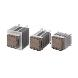

Building Automation
Industrial Automation
Power Automation & Safety


Bangladesh Distributor
Question
Choosing from among CR elements, diodes, varistors, and other kinds of surge suppressor elements, which is the most effective for protecting contacts?
Answer
For a DC load, a diode is generally the most effective, and the next most effective is CR elements. For an AC load, a varistor or CR elements are the most effective.
Examples of Surge Suppressors:
| Item | Circuit example | Applicability | Features and remarks | Element selection guidelines | |
| Type | AC | DC | |||
| CR type | * (OK) | OK | *Load impedance must be much smaller than the CR circuit impedance when using the Relay for an AC voltage. When the contacts are open, current flows to the inductive load via CR. | Use the following as guides for C and R values: C: 0.5 to 1 μF per 1 A of contact current (A) R: 0.5 to 1 Ω per 1 V of contact voltage (V) These values depend on various factors, including the load characteristics and variations in characteristics. Capacitor C suppresses the discharge when the contacts are opened, while the resistor R limits the current applied when the contacts are closed the next time. Confirm optimum values experimentally. Generally, use a capacitor with a dielectric strength of 200 to 300 V. For applications in an AC circuit, use an AC capacitor (with no polarity). If there is any question about the ability to cut off arcing of the contacts in applications with high DC voltages, it may be more effective to connect the capacitor and resistor across the contacts, rather than across the load. Perform testing with the actual equipment to determine this. | |
| OK | OK | The release time of the contacts will be increased if the load is a Relay or solenoid. | |||
| Diode type | NG | OK | The electromagnetic energy stored in the inductive load reaches the inductive load as current via the diode connected in parallel, and is dissipated as Joule heat by the resistance of the inductive load. This type of circuit increases the release time more than the CR type. | Use a diode having a reverse breakdown voltage of more than 10 times the circuit voltage, and a forward current rating greater than the load current. A diode having a reverse breakdown voltage two or three times that of the supply voltage can be used in an electronic circuit where the circuit voltage is not particularly high. | |
| Diode + Zener diode type | NG | OK | This circuit effectively shortens the release time in applications where the release time of a diode circuit is too slow. | The breakdown voltage of the Zener diode should be about the same as the supply voltage. | |
| Varistor type | OK | OK | This circuit prevents a high voltage from being applied across the contacts by using the constant- voltage characteristic of a varistor. This circuit also somewhat increases the release time. Connecting the varistor across the load is effective when the supply voltage is 24 to 48 V, and across the contacts when the supply voltage is 100 to 240 V. | The cutoff voltage Vc must satisfy the following conditions. For AC, it must be multiplied by √2. Vc > (Supply voltage × 1.5) If Vc is set too high, its effectiveness will be reduced because it will fail to cut off high voltages. | |
Do not use a surge suppressor in the manners shown below.
| This circuit arrangement is very effective for diminishing arcing at the contacts when breaking the circuit. However, since electrical energy is stored in C (capacitor) when the contacts are open, the current from C flows into the contacts when they close. This may lead to contact welding. | |
| This circuit arrangement is very useful for diminishing arcing at the contacts when breaking the circuit. However, since the charging current to C flows into the contacts when they are closed, contact welding may occur. |
Note:Although it is thought that switching a DC inductive load is more difficult than a resistive load, an appropriate contact protection circuit can achieve almost the same characteristics.
Recommended Products
 MY
MY
New Latching Levers for Circuit Checking Added to Our Best-selling MY General-purpose Relays
LY
Power-switching Compact General-purpose Relays
G3PE (Three-phase)
Compact, Slim-profile SSRs with Heat Sinks. Solid State Contactors for Three-phase Heaters Reduced Installation Work with DIN Track Mounting.
Other General Purpose Relays FAQ
-
The Relay does not operate even when voltage is applied. Why is this?
-
We were using G2R General Purpose Relay to turn a solenoid valve ON and OFF, and sparks at the contact damaged the relay after only about 3 months of use. What caused this, and what kind of countermeasure is there for it?
-
A Relay burned out. Why is this?